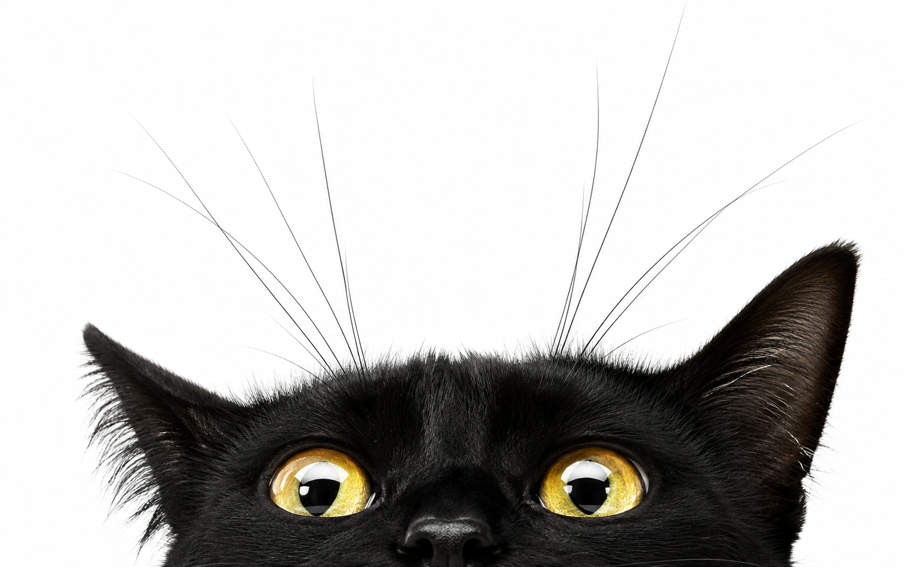
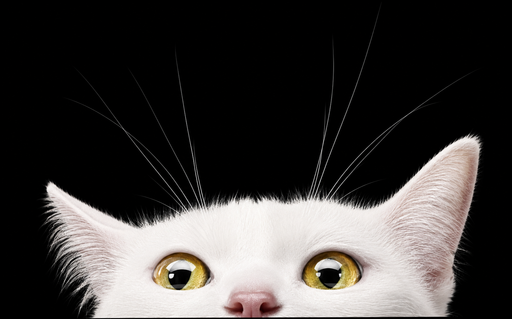

Sua biblioteca deixa rastros.
Isto não é apenas uma lista. Cada música adicionada ocupa um lugar em um mapa que pertence somente a você.
UM ARQUIVO · UM PRIMEIRO PONTO

Isto não é apenas uma lista. Cada música adicionada ocupa um lugar em um mapa que pertence somente a você.
UM ARQUIVO · UM PRIMEIRO PONTOArraste um arquivo de áudio
WAV · MP3 · FLAC · OGG · M4A